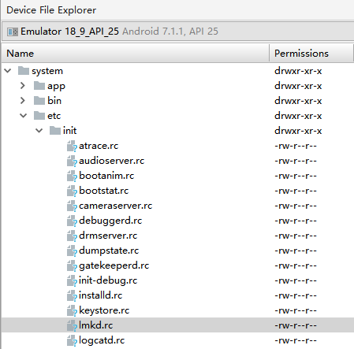
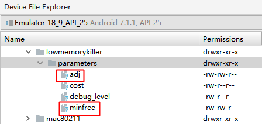
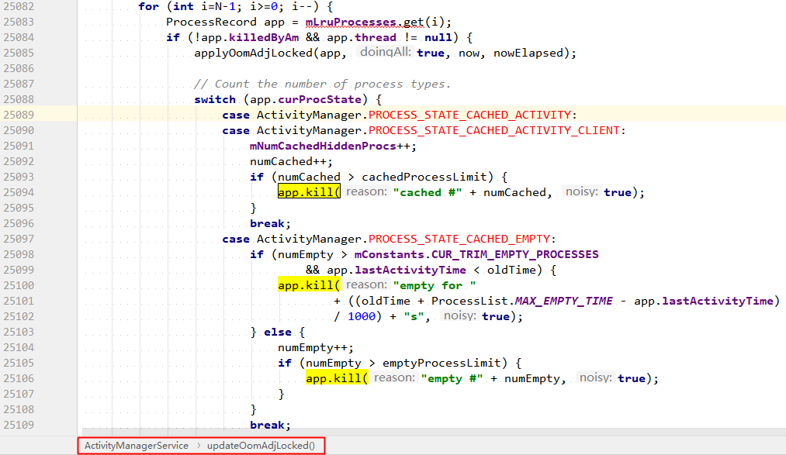

1. Low Memory Killer机制
[toc]
Andorid 的 Low Memory Killer 是在标准的 Linux Kernel 的 OOM Killer 基础上修改而来的一种内存管理机制。当系统内存不足时，杀死不重要的进程以释放其内存。LMK 的关键参数有 3 个：
- oom_adj：在 Framework 层使用，代表进程的优先级，数值越高，优先级越低，越容易被杀死。
- oom_adj threshold：在 Framework 层使用，代表 oom_adj 的内存阈值。Android Kernel 会定时检测当前剩余内存是否低于这个阀值，若低于则杀死 oom_adj ≥ 该阈值对应的 oom_adj 中，数值最大的进程，直到剩余内存恢复至高于该阀值的状态。
- oom_score_adj： 在 Kernel 层使用，由 oom_adj 换算而来，是杀死进程时实际使用的参数。
1.1. 1. oom_adj
取值范围定义：
-> ProcessList（AOSP, master 分支）
// These are the various interesting memory levels that we will give to
// the OOM killer. Note that the OOM killer only supports 6 slots, so we
// can't give it a different value for every possible kind of process.
private final int[] mOomAdj = new int[] {
FOREGROUND_APP_ADJ, VISIBLE_APP_ADJ, PERCEPTIBLE_APP_ADJ,
BACKUP_APP_ADJ, CACHED_APP_MIN_ADJ, CACHED_APP_MAX_ADJ
};
复制代码
以上仅是 LMK 杀死进程时使用的 adj，实际上该类中定义了更多的 adj：
| 常量定义 | 常量取值 | 含义 |
|---|---|---|
| NATIVE_ADJ | -1000 | native进程（不被系统管理） |
| SYSTEM_ADJ | -900 | 系统进程 |
| PERSISTENT_PROC_ADJ | -800 | 系统persistent进程，比如telephony |
| PERSISTENT_SERVICE_ADJ | -700 | 关联着系统或persistent进程 |
| FOREGROUND_APP_ADJ | 0 | 前台进程 |
| VISIBLE_APP_ADJ | 100 | 可见进程 |
| PERCEPTIBLE_APP_ADJ | 200 | 可感知进程，比如后台音乐播放 |
| BACKUP_APP_ADJ | 300 | 备份进程 |
| HEAVY_WEIGHT_APP_ADJ | 400 | 后台的重量级进程，system/rootdir/init.rc文件中设置 |
| SERVICE_ADJ | 500 | 服务进程 |
| HOME_APP_ADJ | 600 | Home进程 |
| PREVIOUS_APP_ADJ | 700 | 上一个App的进程 |
| SERVICE_B_ADJ | 800 | B List中的Service（较老的、使用可能性更小） |
| CACHED_APP_MIN_ADJ | 900 | 不可见进程的adj最小值 |
| CACHED_APP_MAX_ADJ | 906 | 不可见进程的adj最大值 |
| UNKNOWN_ADJ | 1001 | 一般指将要会缓存进程，无法获取确定值 |
以上常量在 Android 6.0（API23）及之前版本的取值范围为 [-17, 16]：ProcessList（AOSP，marshmallow-release 分支）
规律：取值越大，重要性越低，进程越容易被杀死。
当触发 LowMemoryKiller 机制时，可根据日志中进程的 adj 值，具体分析进程是在什么状态下被杀死的。
1.2. 2. oom_adj threshold
取值范围定义：
-> ProcessList（AOSP, master 分支）
// The actual OOM killer memory levels we are using.
private final int[] mOomMinFree = new int[mOomAdj.length];
复制代码
具体取值由下面两个变量经过换算得到：
// These are the low-end OOM level limits. This is appropriate for an
// HVGA or smaller phone with less than 512MB. Values are in KB.
private final int[] mOomMinFreeLow = new int[] {
12288, 18432, 24576,
36864, 43008, 49152
};
// These are the high-end OOM level limits. This is appropriate for a
// 1280x800 or larger screen with around 1GB RAM. Values are in KB.
private final int[] mOomMinFreeHigh = new int[] {
73728, 92160, 110592,
129024, 147456, 184320
};
复制代码
数组初始化或更新的方法：
private void updateOomLevels(int displayWidth, int displayHeight, boolean write) {
float scaleMem = ((float)(mTotalMemMb-350))/(700-350);
int minSize = 480*800; // 384000
int maxSize = 1280*800; // 1024000 230400 870400 .264
float scaleDisp = ((float)(displayWidth*displayHeight)-minSize)/(maxSize-minSize);
float scale = scaleMem > scaleDisp ? scaleMem : scaleDisp;
...省略
final boolean is64bit = Build.SUPPORTED_64_BIT_ABIS.length > 0;
for (int i=0; i<mOomAdj.length; i++) {
int low = mOomMinFreeLow[i];
int high = mOomMinFreeHigh[i];
if (is64bit) {
// Increase the high min-free levels for cached processes for 64-bit
if (i == 4) high = (high*3)/2;
else if (i == 5) high = (high*7)/4;
}
mOomMinFree[i] = (int)(low + ((high-low)*scale));
}
...省略
if (write) {
ByteBuffer buf = ByteBuffer.allocate(4 * (2*mOomAdj.length + 1));
buf.putInt(LMK_TARGET);
for (int i=0; i<mOomAdj.length; i++) {
// 除以了 PAGE_SIZE，所以 minfree 中的单位为页，及 4KB
buf.putInt((mOomMinFree[i]*1024)/PAGE_SIZE);
buf.putInt(mOomAdj[i]);
}
// 向 lmkd 进程发送 LMK_TARGET 命令，
// 将 oom_adj 阈值写入 "/sys/module/lowmemorykiller/parameters/minfree"
// 将 oom_adj 写入 "/sys/module/lowmemorykiller/parameters/adj"
writeLmkd(buf);
SystemProperties.set("sys.sysctl.extra_free_kbytes", Integer.toString(reserve));
}
// GB: 2048,3072,4096,6144,7168,8192
// HC: 8192,10240,12288,14336,16384,20480
}
复制代码
在 ActivityManagerService 调用 updateConfiguration() 的过程中会调用该方法，根据设备的分辨率初始化或更新阈值的大小。
1.3. 3. oom_score_adj
取值范围定义在 Linux Kernel 中：
-> oom.h
#ifndef _UAPI__INCLUDE_LINUX_OOM_H
#define _UAPI__INCLUDE_LINUX_OOM_H
/*
* /proc/<pid>/oom_score_adj set to OOM_SCORE_ADJ_MIN disables oom killing for
* pid.
*/
#define OOM_SCORE_ADJ_MIN (-1000)
#define OOM_SCORE_ADJ_MAX 1000
/*
* /proc/<pid>/oom_adj set to -17 protects from the oom killer for legacy
* purposes.
*/
#define OOM_DISABLE (-17)
/* inclusive */
#define OOM_ADJUST_MIN (-16)
#define OOM_ADJUST_MAX 15
#endif /* _UAPI__INCLUDE_LINUX_OOM_H */
复制代码
oom_adj 到 oom_score_adj 的换算方法定义在 Linux Driver 中：
static int lowmem_oom_adj_to_oom_score_adj(int oom_adj)
{
if (oom_adj == OOM_ADJUST_MAX)
return OOM_SCORE_ADJ_MAX;
else
return (oom_adj * OOM_SCORE_ADJ_MAX) / -OOM_DISABLE;
}
复制代码
1.4. 4. 工作流程
简述 LMK 的工作流程
1.4.1. 4.1 启动 lmkd
lmkd 是由 init进程通过解析 init.rc 文件来启动的守护进程。lmkd 会创建名为 lmkd 的 socket，节点位于 /dev/socket/lmkd，该 socket 用于跟上层 framework 交互：

service lmkd /system/bin/lmkd
class core
group root readproc
critical
socket lmkd seqpacket 0660 system system
writepid /dev/cpuset/system-background/tasks
复制代码
lmkd 启动后，便会进入循环等待状态，接受来自 ProcessList 的三个命令：
| 命令 | 功能 | 方法 |
|---|---|---|
| LMK_TARGET | 初始化 oom_adj | ProcessList::setOomAdj() |
| LMK_PROCPRIO | 更新 oom_adj | ProcessList::updateOomLevels() |
| LMK_PROCREMOVE | 移除进程（暂时无用） | ProcessList::remove() |
1.4.2. 4.2 初始化 oom_adj
在 ActivityManagerService 调用 updateConfiguration() 的过程中会调用 ProcessList::updateOomLevels() 方法，根据设备的分辨率调整阈值的大小，通过 LMK_TARGET 命令，通知 lmkd（low memory killer deamon）分别向 /sys/module/lowmemorykiller/parameters 目录下的 minfree 和 adj 节点写入相应信息：

1.4.3. 4.3 更新 oom_adj
在 ActivityManagerService 调用 applyOomAdjLocked() 的过程中会调用 ProcessList::setOomAdj() 方法，通过 LMK_PROCPRIO 命令，通知 lmkd 向 /proc/进程号/oom_score_adj 写入 oomadj：
D:\Android\projects\wanandroid_java>adb shell ps | findstr wanandroid
u0_a71 6461 1285 1177696 84024 SyS_epoll_ b131e424 S com.yuloran.wanandroid_java
D:\Android\projects\wanandroid_java>adb shell ls /proc/6461/
...省略
oom_adj
oom_score
oom_score_adj
...
复制代码
ActivityManagerService 会根据当前应用进程托管组件（即四大组件）生命周期的变化，及时的调用 applyOomAdjLocked()，更新进程状态及该状态对应的 oom_adj。
进程状态表：
-> ActivityManager.java（AOSP，branch：master）
| 常量定义 | 常量取值 | 含义 |
|---|---|---|
| PROCESS_STATE_UNKNOWN | -1 | 非真实的进程状态 |
| PROCESS_STATE_PERSISTENT | 0 | persistent 系统进程 |
| PROCESS_STATE_PERSISTENT_UI | 1 | persistent 系统进程，并正在执行UI操作 |
| PROCESS_STATE_TOP | 2 | 拥有当前用户可见的 top Activity |
| PROCESS_STATE_FOREGROUND_SERVICE | 3 | 托管一个前台 Service 的进程 |
| PROCESS_STATE_BOUND_FOREGROUND_SERVICE | 4 | 托管一个由系统绑定的前台 Service 的进程 |
| PROCESS_STATE_IMPORTANT_FOREGROUND | 5 | 对用户很重要的进程，用户可感知其存在 |
| PROCESS_STATE_IMPORTANT_BACKGROUND | 6 | 对用户很重要的进程，用户不可感知其存在 |
| PROCESS_STATE_TRANSIENT_BACKGROUND | 7 | Process is in the background transient so we will try to keep running. |
| PROCESS_STATE_BACKUP | 8 | 后台进程，正在运行backup/restore操作 |
| PROCESS_STATE_SERVICE | 9 | 后台进程，且正在运行service |
| PROCESS_STATE_RECEIVER | 10 | 后台进程，且正在运行receiver |
| PROCESS_STATE_TOP_SLEEPING | 11 | 与 PROCESS_STATE_TOP 一样，但此时设备正处于休眠状态 |
| PROCESS_STATE_HEAVY_WEIGHT | 12 | 后台进程，但无法执行restore，因此尽量避免kill该进程 |
| PROCESS_STATE_HOME | 13 | 后台进程，且拥有 home Activity |
| PROCESS_STATE_LAST_ACTIVITY | 14 | 后台进程，且拥有上一次显示的 Activity |
| PROCESS_STATE_CACHED_ACTIVITY | 15 | 进程处于 cached 状态，且内含 Activity |
| PROCESS_STATE_CACHED_ACTIVITY_CLIENT | 16 | 进程处于 cached 状态，且为另一个 cached 进程(内含 Activity)的 client 进程 |
| PROCESS_STATE_CACHED_RECENT | 17 | 进程处于 cached 状态，且内含与当前最近任务相对应的 Activity |
| PROCESS_STATE_CACHED_EMPTY | 18 | 进程处于 cached 状态，且为空进程 |
| PROCESS_STATE_NONEXISTENT | 19 | 不存在的进程 |
同一个进程，在不同状态下，其 oom_adj 是不一样的。
1.4.4. 4.4 kill 并移除进程
在 ActivityManagerService 调用 updateOomAdjLocked() 时，会判断进程是否需要被杀死，若是，则调用 ProceeRecord::kill() 方法杀死该进程：

注: 目前 LMK_PROCREMOVE 命令暂时无用，即未执行有意义的代码。